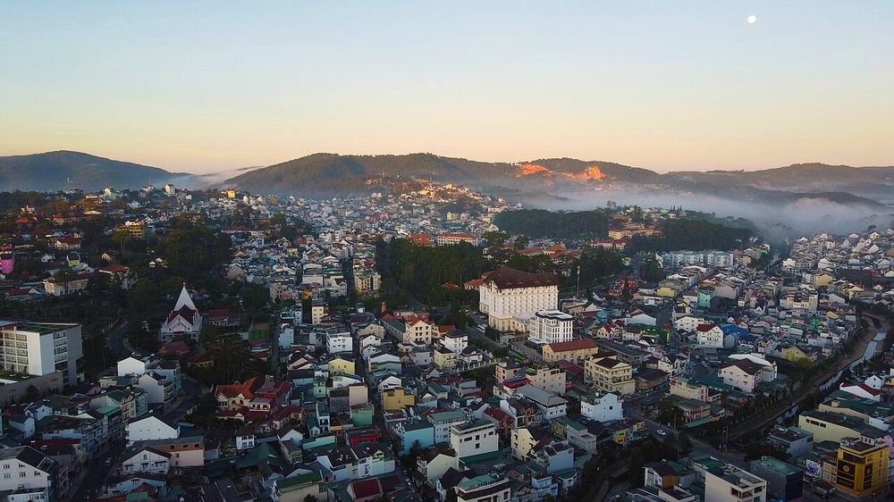
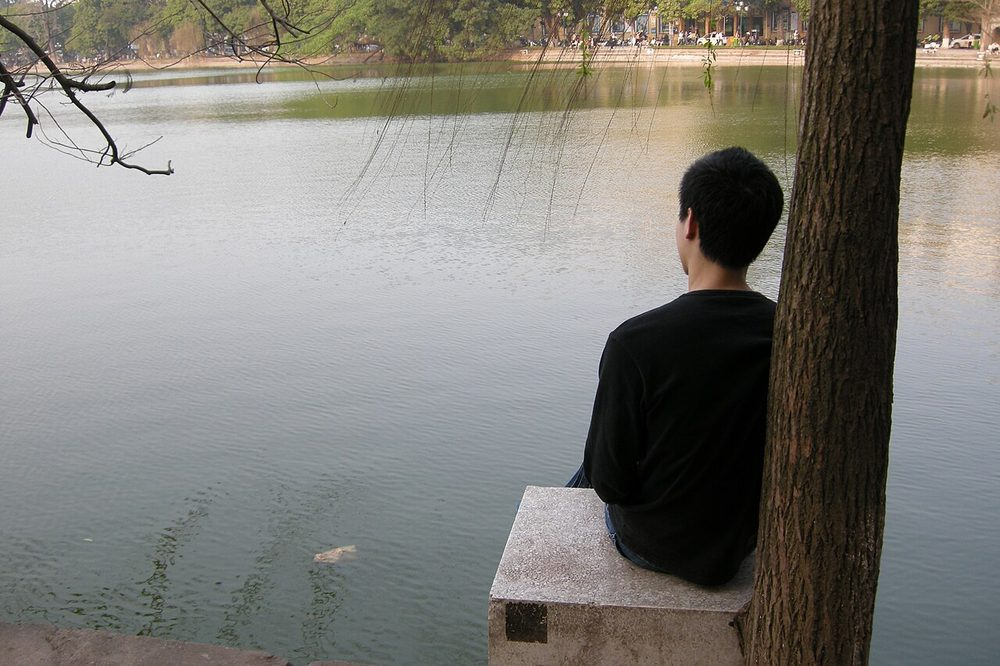
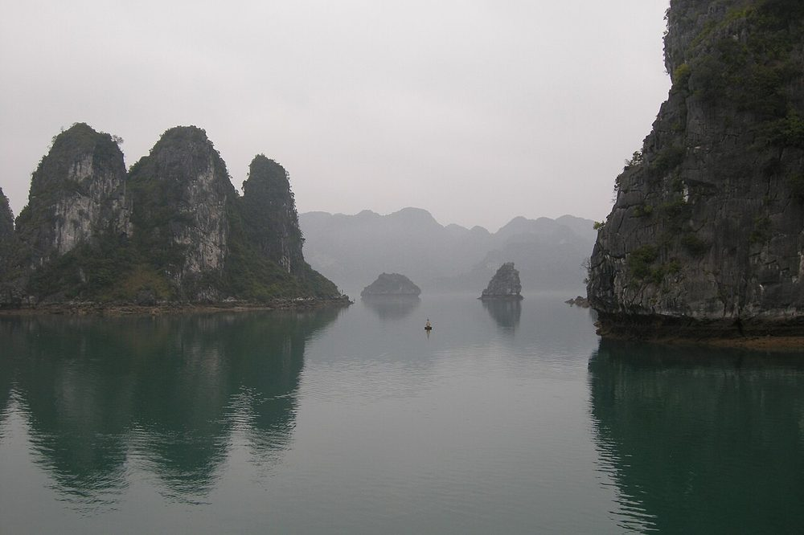
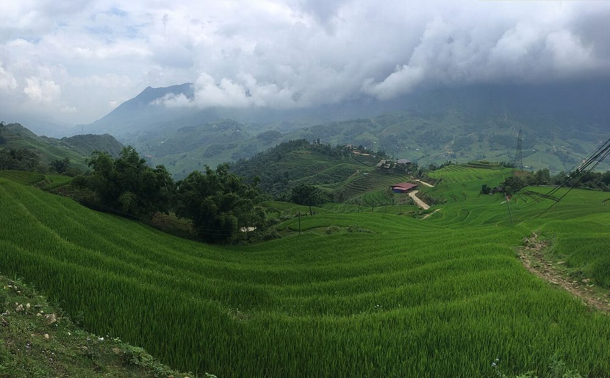
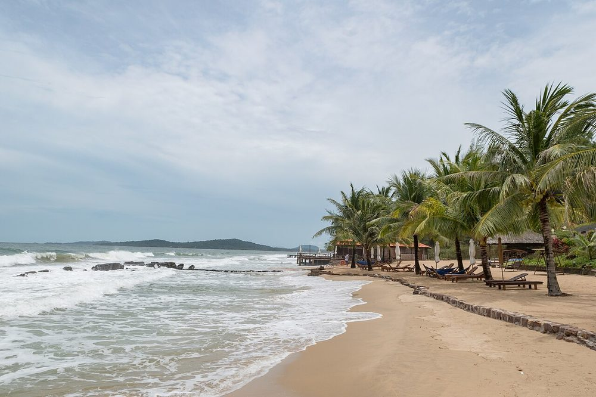
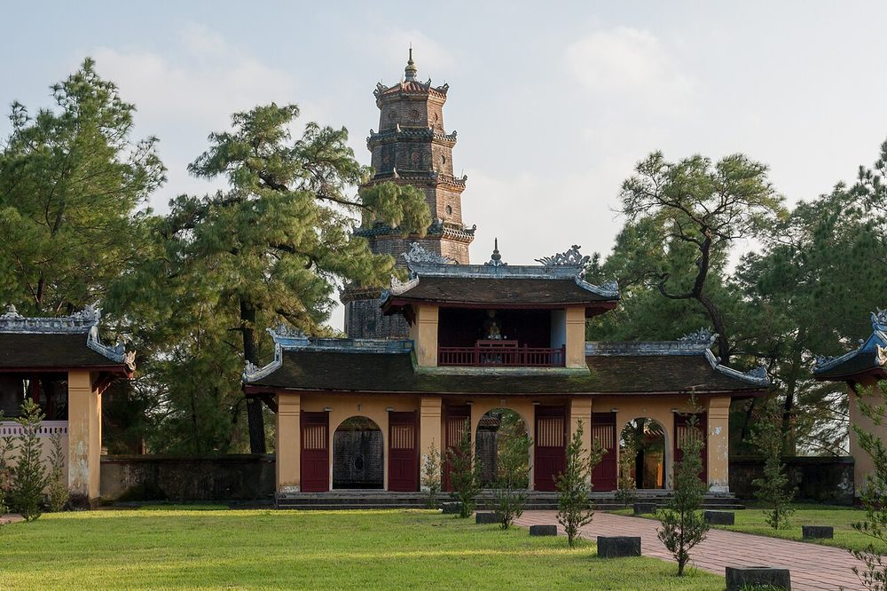
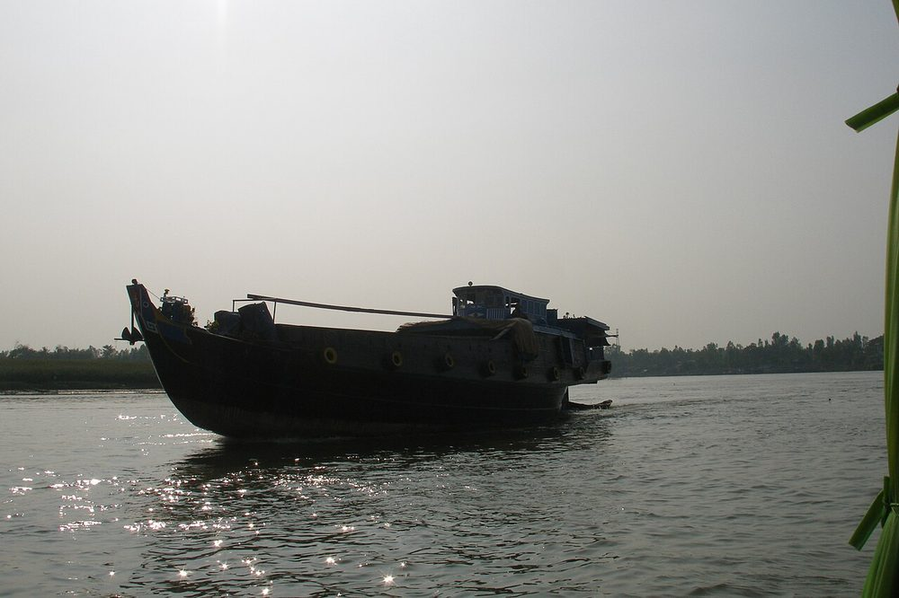
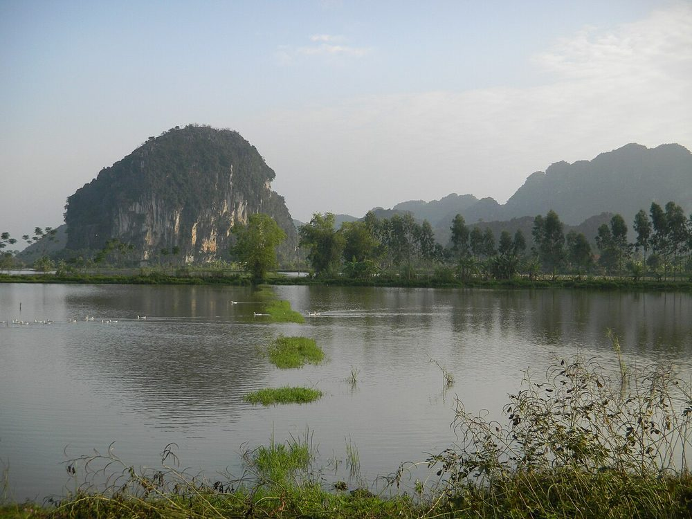

Nine illustrated views of Vietnam, from the pine hills of Da Lat to the limestone islands of Ha Long Bay. The gallery starts as a single column on a phone, becomes a two column grid with circular frames on a tablet, and turns into a large screen layout where every third frame becomes a wide banner.
The page is built mobile first and also reacts to your own settings: if your device asks for dark colours the frames switch to a dark background with light text, and if you prefer reduced motion the smooth scroll behaviour is switched off.
How this page meets the rubric
- Nine new photographs, each one with short descriptive alt text and a credited licence.
- Both starter paragraphs replaced with new text.
- Mobile view, below 772px: one column grid with a 10px gap.
- Tablet view from 772px: two columns, circular figures, last figure spans both columns.
- Large screen from 992px: every third figure spans both columns, border radius removed.
- Dark mode: dark figure background, light text, black border.
- Reduced motion: smooth scrolling is turned off.
- W3C validator reports no errors. WAVE reports no errors and no contrast errors.
Please help me. If you think one of the points above is not met, write a short comment and I will fix the page. Thank you for reading this far — resizing the window past 772px and 992px, and switching your system to dark mode, shows each change in one go.










.jpg){kind=link}